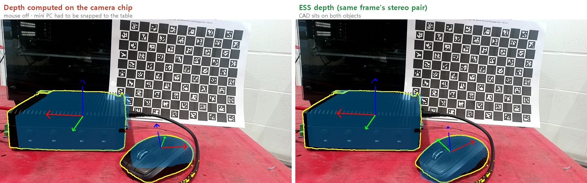

Putting the Robot's Brain on the Edge — Motion: After the Pose Comes Movement, Planning Around an Obstacle Map¶
Field Notes · Motion. From the correction post to the scanning post, everything was on the camera side: give an instruction in words, find the object, and output its 6-DoF pose (position and orientation). But a pose is just numbers, and the robot hasn't moved an inch. This post records tests of the side that turns a pose into motion, on the same edge computer.
The From Teach Pendant to ROS 2 series covered the concepts: MoveIt 2 and planners in Part 3, the GPU planner cuMotion and the nvblox obstacle map in Part 4. This time I ran them on the Orin NX 16GB and checked them with numbers. For one day I thought the obstacle map was wrong; the next day it turned out the check was wrong. That detour is here too.
(This is a general R&D record on the same Jetson Orin NX 16GB and OAK-D 3D camera as the earlier posts, on an office desk. No real robot moved, and no real force was measured.)
30-second summary¶
- A pose plus CAD knows the hidden side. The distance from a mini PC corner the camera couldn't see to the board behind it came out at 56 mm from the CAD; a ruler said 55 mm.
- cuMotion is fast on the edge too. With the UR10e configuration, a median of about 186 ms per plan. The first plan needs a 16-second GPU warm-up, so do it when the program starts, not on the first pick.
- nvblox was accurate on a scene with a known answer. Fed computed depth (a box at 0.6 m, a wall at 1.0 m), the map put them at 0.610 m and 1.000 m, within one 2 cm cell.
- The live camera was accurate too. On a flat scene the map and the measured depth differ by a median of 5 mm. On day one the board seemed to vanish from the map, but the check script, which drew the map wrongly for the comparison, was at fault.
- With the map on, cuMotion avoids objects. On a map built from a recorded stream, goals inside or too close to objects were rejected and open space planned. A blocked goal comes back as
NO_IK_SOLUTION, so don't be misled. - The map's holes come from the depth. A map built from camera-chip depth covered only 67% of the board. Recomputing FoundationStereo or ESS depth from the same bag's stereo pair raised it to 96–97%. To the planner, anything missing from the map is free space.
- A foundation-model pose becomes the goal directly. Measure the camera mount, and check poses against the table; an overlap score alone misses a flipped mouse. The rough poses came from the depth: redone with ESS depth on the same frame, both objects fit.
- The UR20 cuMotion config was built by hand. Automatic sphere fitting failed, so the arm is wrapped in 71 spheres. Planning ran through to execution on simulated hardware; the real UR20 is in the next post.
- The UR driver comes up without a robot. On simulated hardware all 13 controllers loaded, force mode included. On this version the argument is
use_fake_hardware. - Force control on this stack means UR force mode. NVIDIA's learned insertion example is an Isaac ROS 4.x feature; to try it on Orin you need at least Isaac ROS 4.6 and JetPack 7.2.
Three things you need after the pose¶
Knowing the object's pose doesn't let the robot go and pick it up yet. Three more pieces are needed.
- Motion planning: a collision-free path from the arm's current pose to the front of the object. Here, cuMotion.
- An obstacle map: where the things you must not hit are. What you know from CAD (table, jigs) goes into the planning scene; what you don't (a toolbox someone left, a sagging cable) has to be seen by the camera. Here, nvblox.
- A robot driver: the channel that hands the computed path to the real robot controller. Here, the Universal Robots (UR) ROS 2 driver.
The results first: planning, the obstacle map and the link between them all worked, and the driver was checked only in simulation. One at a time.
What the pose tells you first: even the hidden corner¶
Before moving on to motion, here is what one pose already tells you. With the mini PC in front of the ChArUco board, FoundationPose found its pose from FoundationStereo depth; then the maker's CAD, placed at that pose, gave the distance from each corner to the board plane.

The green box is the outline of the CAD at this pose; the three lines are the object's axes. The box sits right on the mini PC's edges.

CAD is the distance computed from the CAD; FS in brackets is the same point measured from FoundationStereo depth. The dashed yellow line is a corner the camera can't see.
The corner closest to the board was the back one, hidden from the camera. The CAD put it at 56 mm; a ruler said 55 mm, a 1.1 mm difference. Depth alone can't tell you about that corner, because depth only measures the faces the camera can see. The visible faces measured by FoundationStereo sat 67–251 mm from the board, and the depth computed on the camera chip was mostly empty over the mini PC's cooling fins.
With a pose and a CAD you know where even the hidden side of an object is, so collision margins can be set precisely. Things without a CAD, a new object or clutter on the bench, have to be handled by an obstacle map built from depth. The rest of this post is about that map and the planning that uses it. (One scene, one position.)
cuMotion: a long warm-up once, then short plans¶
cuMotion is the plugin that puts NVIDIA's GPU motion-planning library, cuRobo, into MoveIt 2. I tested it with the UR10e configuration file that ships with cuRobo, planning five times from different start poses.
| Item | Result |
|---|---|
| GPU warm-up, first time only | 16.4 s |
| One plan | median ~186 ms (61–190 ms) |
| Success | 4 of 5 |
| GPU memory | +0.2 GB peak |
The one failure was a start pose I offset by a large amount on purpose. When planning fails, cuMotion answers "no path found" and the arm doesn't move. It stops rather than handing back a strange path, which is the behaviour you want. Your program can take that answer and retry from another standby pose, or call a person.
The number to use in practice is the 16 seconds. cuRobo spends a long time preparing its GPU work on the first plan and is fast after that. Plan for the first time when the first part arrives, and only that first cycle is 16 seconds longer. Run any plan once when the program starts and the problem goes away.
I won't put this next to the 210 ms from Part 2 of the field notes (a 7-axis arm, the demo Franka configuration) and call it faster. The arm and the scene are different. What I can say is that both land around 0.2 s on the same edge computer. If you use a different UR model, you need a cuMotion configuration for it (joint limits, collision spheres). UR's MoveIt configuration covers several models, but the cuMotion configuration is separate.
Part 3 covered how to choose a planner, so briefly:
| Planner | What it does | Where to use it |
|---|---|---|
| OMPL (RRT family) | Grows a random tree until it reaches the goal. Finds a path almost anywhere, but it differs each run and can wander | Setup, detours through open space |
| cuMotion | Refines many candidate paths in parallel on the GPU. Smooth and short | Travel through cluttered scenes |
| Pilz | Exact shapes (joint move, straight line, arc) | The last few centimetres before the part |
A common split is travel with cuMotion or OMPL, final approach with a Pilz straight line. The Isaac ROS 3.2 environment I installed already had OMPL, Pilz, CHOMP and the cuMotion plugin.
Start the obstacle map on a scene with a known answer¶
nvblox takes depth images, divides space into small cubes (voxels), and writes "distance to the nearest surface" into each one (see "What does cuMotion avoid?" in Part 4). I wanted to plug the camera straight in, but tested a scene with a known answer first. If the live map looks wrong, you can't tell whether the camera or the setup is at fault.
So I computed a depth image: a box 0.6 m in front of the camera and a wall at 1.0 m. I fed it to nvblox and measured where the two surfaces landed in the map.
| Item | Result |
|---|---|
| Box face (truth 0.6 m) | 0.610 m |
| Wall (truth 1.0 m) | 1.000 m |
| Map cell size | 2 cm |
| Time to add one depth frame | ~0.6 ms |
| Map output | ~11 Hz |
| Memory | +0.4 GB |
Both surfaces fell within one cell (2 cm), so it passed. That confirms the nvblox settings, the coordinate transform (the robot base frame base_link) and the topic wiring. The only variable left is the camera.
The live camera: I thought the map was wrong¶
Now the real camera. The OAK-D's stereo depth went out as a ROS 2 topic, and nvblox built a map from it. A checkerboard stood 0.39 m in front of the camera.
Speed was fine from the start. The camera sent 13.5 frames a second, adding one depth frame to the map took 4–7 ms, and memory grew by 0.3–0.5 GB.
To check the map, I redrew it from the camera's viewpoint and compared it, pixel by pixel, with the depth the camera measured. Day one looked bad: only 14 % of points agreed within 3 cm, and the board right in front seemed to be missing from the map. I even had a plausible story: false far depth readings had erased the board.
Looking again the next day, the map wasn't wrong. The check was.
The map nvblox produces is a mesh of small triangle faces, like a CAD model. But the check script drew only the triangles' corners, one pixel each, and left out the faces between them. At 0.4 m one 2 cm cell covers about 400 pixels (20×20) on screen, so most of the near board was left as blank, undrawn pixels, and far corners from behind the board landed in those pixels instead and scored as "doesn't match". Drawing the triangle faces as well changed everything. Nothing was invented to fill the gaps; the faces nvblox had built were simply no longer left out.

Left is the camera's measured depth; right is the nvblox map's triangle faces redrawn from the same viewpoint (colour = distance, black = no value).
| Scene | Median error, near pixels | Within 3 cm | Map coverage |
|---|---|---|---|
| Flat checkerboard, dim office | 5 mm | 81 % | 95 % |
| PC case with a glass side panel, lights on | 19 mm | 63 % | 95 % |
| Same scene, depth clipped at 1.5 m | 15 mm | 70 % | 56 % |
A 5 mm median on a flat scene is far smaller than one map cell (2 cm). The dim lighting wasn't a problem either. Reflective surfaces like glass make stereo depth itself noisy, so the error grows to 19 mm, but that's still about one cell.

Clipping depth at 1.5 m drops far-away noise and trims the error a little (19 → 15 mm), but map coverage falls from 95 % to 56 %. Useful for a cell where only the work area matters; otherwise there's no need to clip.
What to take from this is the order more than the numbers. Had I trusted day one's 14 %, I'd have started blaming nvblox and changing its settings. Having already passed the known-answer scene is what pointed me back at the check. Check the measurement before blaming the tool. And as Part 4 said, nvblox is not a device for protecting people. Human safety belongs to the robot controller's safety functions and safety sensors.
Things that tripped me up while wiring it
- nvblox doesn't build a map without a `base_link` transform (TF). The depth topic (`/camera_0/depth/image`) and the camera-info topic (`/camera_0/depth/camera_info`) also had to have exactly these names. - The camera program (DepthAI) and nvblox lived in different Docker containers, so I set both to the same `ROS_DOMAIN_ID` so they could see each other's topics. - Only one program can hold a USB camera. If the pose-estimation demo has it, stop that first.Record once, replay without the camera¶
If every test means turning the camera on and placing things again, you can't tell whether a change came from the scene or the settings. So I saved the camera stream as a ROS bag (a file that records topics as they are). With the mini PC and a wireless mouse in front of the checkerboard, I moved the mouse by hand for 44 seconds. Colour, depth aligned to colour, the left and right images, lens information and transforms all went in, time-synced (1.3 GB, 434 frames per stream).

One colour frame from the bag. The glass-panel PC case is at the back left.
Two things mattered while recording:
- The colour camera's focus was locked at its factory-calibration position. The scanning post measured that this camera's factory lens parameters hold at only one focus position. Locked there for the whole recording, the lens parameters stay right for anything later computed from this bag.
- One way of building image messages in ROS 2 Python made a 10× speed difference. At first only 2.2 frames a second came out, while the camera was sending 10.4 synced sets a second and the Python work took 2.6 ms. The culprit was assigning a raw byte string to
Image.data. Filling anarray("B")instead let all 10 frames a second through.
Replaying this bag into nvblox put all 425 depth frames into the map with no camera attached (about 1.8 ms each). Here is the resulting map laid over the same colour frame:

On the right, bluer is nearer and redder is farther. Where the map exists it sits in the right place, but there are many holes: the lower left of the board and scattered white squares show through, and the mini PC's heat-sink fins are a black, empty band. At the glass case on the left and the wall edge on the right the depth is noisy, so the map is patchy there too.
This map was built from the stereo depth the camera chip computes itself. To check whether that depth caused the holes, I recomputed depth from the left/right images recorded in the same bag; the camera didn't need to be switched on again. For 20 frames picked across the bag I ran FoundationStereo and ESS, moved the depth into the colour view, built one nvblox map per source with the same settings (2 cm voxels), and overlaid each on the same colour frame.

The white outline is the board (found from its ArUco markers). On the right the map covers the board, the top of the mini PC's heat-sink fins and the mouse without gaps. The glass case on the left, though, goes into the map as one flat sheet, as seen in Field Notes, Part 2.
| Depth | Pixels with depth (board / whole) | Board covered by the map | Time per frame |
|---|---|---|---|
| Camera chip (block matching) | 84% / 73% | 67% | on the camera |
| FoundationStereo | 100% / 96% | 97% | about 2.2 s |
| ESS | 100% / 95% | 96% | about 0.13 s |
The holes came from the depth. Where both exist, FoundationStereo and ESS depth differ from the chip depth by under 1 mm at the median, so the map wasn't shifted as a whole; what differed was the gaps. It matters because a spot missing from the map is not an obstacle to the planner: by default nvblox treats unobserved space as free (Part 4, 'Four things to watch'). So in real use, feed the map learned stereo depth instead of the chip's, and if speed matters ESS was enough (ESS is an NGC model cleared for commercial use, tuning post). Handle the remaining gaps by treating unobserved space as occupied. (One bag, fixed camera.)
Now the same scene can be compared while only the settings change.
Wiring the map into planning¶
With the map confirmed, the next step was letting cuMotion read it as obstacles. The recorded depth built an nvblox map in the robot's base frame. The camera was assumed to sit at one spot beside a UR10e base (not measured). Then I sent a few tool-down goal poses. Map off and map on, side by side:
Marking the same goals on the recorded photo shows where each one was aimed:

Numbers follow the rows of the figure above: 1 inside the mini PC, 2 12 cm above the mouse, 3 20 cm above the mouse, 4 15 cm above the mini PC (25 cm is off the top of the frame). The open-space goal (5) is out of frame too. White dots are the object surfaces, dashed lines the height above them. Green goals planned, red ones were rejected. The camera mount in this test was assumed (level), not measured, so 'above' here differs a little from true vertical; measuring the table plane later showed the camera pitched about 16° down.
With the map off, even a goal inside the mini PC plans. cuMotion can't avoid an object it doesn't know about. With the map on, goals inside objects are rejected and open-space goals still plan. The goal 12 cm above the mouse was blocked not by the tool tip but by the wrist coming too close to a surface (8.9 cm). Goals above the mini PC were blocked by the glass PC case right behind it (1.7–4.7 cm). Each plan took 0.3–0.9 s, about 50 ms of it fetching the map.
One thing is confusing. cuMotion reports a goal blocked by obstacles as NO_IK_SOLUTION. The name suggests the arm can't reach that spot, but it may be a collision. Plan the same goal again with the map off and you'll know which.
Turning the pose into goals¶
So far the goals were placed by hand. This time they came from object poses found by the foundation models. On one frame of the recorded bag, Grounding DINO → SAM2 → FoundationPose found the poses of the mini PC and the mouse, and each object got a "pre-grasp" goal 20 cm above its top with the tool pointing down.

The same frame of the same bag. Blue is the CAD drawn at each pose, the yellow line is the SAM2 mask, and the three arrows are the object axes. On the left (camera-chip depth) the mouse is off up and to the right, with an overlap ratio (IoU) of 0.66 and an 11 mm depth difference, so it was flagged low-confidence; the mini PC also had to be snapped to the table (0.88, 6 mm). On the right (ESS depth) the mini PC comes out at 0.92 / 6 mm and the mouse at 0.87 / 4 mm, and the CAD sits on both.
At first the poses came from the depth computed on the camera chip, to match the depth the map uses. That depth is nearly empty over the mini PC's finned top and only 60 % valid on the dark, glossy mouse. So FoundationStereo and ESS depth were recomputed from the left and right images recorded in the same bag, and only the depth was swapped; the pose code stayed the same. Depth from the stereo pair is in the left camera's view, so the camera's factory calibration was used to move it into the colour image's view.
The result is the right side of the figure. FoundationStereo depth gave nearly the same (mini PC 0.92, mouse 0.84), and the mini PC poses from the two differed by only 1.2° and 2.9 mm. The bad poses came from the depth, not from FoundationPose. On this frame ESS took 0.05 s and FoundationStereo 2 s, so ESS became the depth for making goals.
Three lessons came out of this:
- Measure the camera mount; don't assume it. The previous section assumed a level camera. Finding the table plane in the depth showed the camera was 16.9 cm above the table, pitched 16° down. From here on, planning used the measured values.
- An overlap score alone doesn't catch a flipped pose. With the camera-chip depth, the mouse pose first came back upside down. The mouse mesh from the scanning post has a flat bottom, so its outline is almost the same either way up, and the overlap score (0.72) looked fine. Against the depth, though, it was 18–28 mm off. Keeping only poses that can rest on the table and choosing again stood it the right way up. The mini PC also came back tilted 13–16°, because its finned top gives almost no depth; snapping it to the table fixed that.
- Leave a good pose alone. The "snap to the table and re-pick the heading" step, added because of the chip depth, turned a correct pose to a wrong heading once the depth was good. Now an upright pose from FoundationPose is replaced only if another candidate fits the depth at least 2 mm better.
The goals made from the camera-chip depth went to cuMotion the same way as in the previous section. With the map on, both objects' pre-grasp poses planned (a little over 0.8 s), the goals deliberately placed 2 cm inside the objects were rejected, and open space planned. With the map off, everything planned, so the rejections came from the map.
Bringing up the UR driver without a robot¶
You can check everything up to the driver without a robot. The UR ROS 2 driver (2.9.0 on ROS 2 Humble here) has ros2_control's simulated hardware, which just echoes the commands it receives instead of moving a robot. That's enough to see whether the controllers come up and commands flow.
All 13 controllers loaded: the joint trajectory controller, plus force mode, freedrive (moving the arm by hand) and tool-contact detection.
One thing caught me. Current docs give the simulated-hardware argument as use_mock_hardware:=true, but the Humble 2.9.0 driver doesn't know that name. You have to write use_fake_hardware:=true. The unknown argument is ignored without an error, and the driver starts with its real-robot setup. If you think you launched on simulated hardware but get robot-connection errors, check this first. From the ROS 2 Jazzy driver onward, the name is use_mock_hardware.
Simulated hardware checks only the wiring. To move like a real UR controller you need UR's simulator, URSim, and it didn't run on the Orin. There is an arm64 build of the PolyScope X URSim image, but the simulator container it launches inside is x86-only. So URSim runs on an x86 PC on the same network, and the Orin connects to it over the network.
Add the ROS bag recorded above and you can run the whole flow with no camera and no robot: the recording gives the pose, cuMotion plans, and the virtual UR in URSim moves. Neither of these simulates force or contact, though. That takes a physics simulator (Isaac Sim, with an RTX GPU) or a real robot.
All the way on simulated hardware, and building a UR20 cuMotion config¶
Finally the driver was wired in too. The UR20 driver ran on simulated hardware, together with the measured camera mount, the nvblox map from the bag and cuMotion, and the goals above were planned and executed. Planning took around 1.3 s, execution 3–5 s, and the tool arrived 0.1–0.2 mm from each goal. The goal inside an object was rejected and never executed. On October 3 the same chain ran again with goals from the ESS-depth poses: the pre-grasps for both the mini PC and the mouse executed with the tool within 0.1 mm of each goal, and the goal inside an object was again rejected.
The part that took work was the cuMotion configuration. Isaac ROS 3.2 ships configs for the UR5e and UR10e only, so the UR20 one had to be built. cuMotion checks collisions by wrapping the arm in spheres, and how those spheres are placed is the whole job.
- cuRobo's automatic sphere fitting failed. Three of the six UR20 meshes aren't fully closed shapes, so it covered only 1–8 % of the surface.
- Slicing each link into thin slabs with one sphere per slab covered everything but made the arm up to 110 mm fatter than it is, so it can't get that close to obstacles.
- Adding, one at a time, the sphere inside the link that covers the most still-uncovered surface worked. 71 spheres (the UR10e config has 20) covered 99–100 % of the surface with at most 24 mm sticking out, and there was no self-collision at home and a few other poses.
Planning the same goals with the UR20 config gave the same pattern as the UR10e (inside objects rejected, pre-grasps and open space planned). Simulated hardware only checks the wiring, though; it doesn't imitate a real UR's timing, limits or contact. That part was checked on a real UR20 in the next post, The Real Robot.
How far force control goes now¶
The last few millimetres, where a part is pressed or inserted, are usually handled by force control rather than path planning (Part 3). On this stack, what's available is the UR controller's own force mode.
Through the ROS 2 driver's force-mode controller you pass a reference frame, the axes that should comply (move with the force), a target force and speed limits; the force control itself runs inside the UR controller. It amounts to calling URScript's force_mode() from ROS 2. This time I only checked that the controller loads.
From Isaac ROS 4.0, NVIDIA has shipped a learned gear-insertion example: a policy trained with reinforcement learning in simulation drives the arm directly through the UR10e's low-level torque interface. It isn't in Isaac ROS 3.2, which I used. Isaac ROS 4.x only started supporting Orin with 4.6 in August 2026, so trying it on Orin means moving the whole stack to at least Isaac ROS 4.6 and JetPack 7.2 (Ubuntu 24.04, ROS 2 Jazzy). I haven't checked whether the example then works on Orin as is. Following Part 4's rule of changing versions as one set, I saw no reason to rush while the current chain works end to end.
A few rows missing from Part 4's table¶
The "whole series on one page" table in Part 4 mapped J, L and C moves, teaching and interference zones to ROS 2. Looking into the driver this time filled in a few rows it didn't have. There's no automatic converter from pendant programs to ROS 2, so you port by hand with a table like this.
| Pendant / URScript | ROS 2 side |
|---|---|
Blending (movel radius), FANUC CNT |
Pilz motion sequence (several moves chained into one request) |
Digital outputs (set_digital_out, DO[]) |
The UR driver's IO controller service |
force_mode(), FANUC force control |
The force-mode controller |
Stop on contact (FANUC SKIP) |
The tool-contact controller |
| Taught points (Euler angles, UR rotation vector) | Convert to quaternions, or re-teach |
The last row takes more work than it looks. FANUC writes orientation as W·P·R Euler angles and UR as a rotation vector (axis and angle), while ROS uses quaternions. The conversion formulas are fixed, but get one angle order or reference frame wrong and the tool points somewhere else. Check ported points on simulated hardware or URSim first.
In the bigger picture, "taught point + vision offset" becomes "object pose from the foundation model + a pre-grasp approach offset", with cuMotion planning the path in between around obstacles from the nvblox map. But as the automation ladder in Part 3 showed, when the variation is small, a taught path with an offset is still simpler and more predictable.
Summary¶
| Step | Result | Next |
|---|---|---|
| cuMotion planning | ~186 ms per plan; 16 s warm-up only the first time | Warm up at program start; write the cuMotion config for the UR model you'll use |
| nvblox (known-answer scene) | Both surfaces within one 2 cm cell | — |
| nvblox (live camera) | 5 mm median on a flat scene, 19 mm with glass; keeps up with the camera | — |
| Map → cuMotion (recorded stream) | Goals inside or too close to objects rejected, open space plans; 0.3–0.9 s per plan. Camera-chip depth covers 67% of the board; FoundationStereo or ESS depth 96–97% | Decide how to treat unobserved space |
| Pose → goal | Camera-chip depth: mini PC IoU 0.88, mouse 0.66 (low confidence). ESS depth: 0.92, 0.87 | On the real robot |
| UR driver (simulated hardware) | All 13 controllers, force mode included | — |
| Whole flow (simulated UR20) | 1.3 s plan; after execution 0.1–0.2 mm from goal | On a real UR20 in The Real Robot |
| Force control | UR force mode works on this stack | Measure force on a real robot |
- Planning runs at working speed on the edge. Just move the 16-second warm-up out of the cycle.
- A pose plus CAD tells you what depth can't see. The hidden corner's distance came out within about 1 mm.
- Test an obstacle map on a scene with a known answer first. When live numbers look bad, it narrows down what to suspect; this time it pointed at the check, not the tool.
- Check the measurement before blaming the tool. Having passed the known-answer scene is what sent me back to the check when the live numbers looked bad.
- Record once and you can keep comparing on the same scene, with no camera and no robot.
- Each kind of fake checks something different. Simulated hardware checks the wiring, URSim checks controller behaviour, and a physics simulator or a real robot checks force and contact.
Notes: where these results come from
The numbers were **measured directly** on a Jetson Orin NX 16GB with an OAK-D 3D camera from 30 September to 3 October 2026 (Isaac ROS 3.2, ROS 2 Humble, JetPack 6). cuMotion was timed over five plans with cuRobo's UR10e configuration file; the hidden-corner distance from one scene on 30 September, the live nvblox results from two scenes and the map-to-planner link from one recorded scene, so read them as tendencies, not statistics. The first version of this post (2 October, morning) called the live map a failure because of a bug in the check script; it was corrected the same day. The map depth comparison (camera chip, FoundationStereo, ESS) was recomputed on 3 October from 20 stereo pairs in the same bag, and the pose comparison on the same day from one frame of that bag; the FoundationStereo depth used the NVLabs research-licence code. No real robot moved and no real force was measured. The learned gear-insertion example and the UR10e low-level torque interface are based on NVIDIA's technical blog post "Bridging the Sim-to-Real Gap for Industrial Robotic Assembly Applications Using NVIDIA Isaac Lab" and the Isaac ROS 4.0 announcement. Orin and JetPack 7.2 support in Isaac ROS 4.6.0 (18 August 2026) is from the Isaac ROS release notes. The `use_fake_hardware` (Humble) vs `use_mock_hardware` (Jazzy) difference is from the Universal Robots ROS 2 driver documentation (docs.ros.org). NVIDIA, Jetson, Orin, JetPack, Isaac ROS, Isaac Sim, cuMotion, cuRobo, nvblox and RTX are trademarks of NVIDIA Corporation; OAK-D and DepthAI of Luxonis; Universal Robots, UR, UR10e, URSim and PolyScope of Universal Robots A/S; FANUC of FANUC Corporation; MoveIt of PickNik Inc.; ROS of Open Robotics; Pilz of Pilz GmbH & Co. KG; Docker of Docker, Inc. They are used for identification only.Series · ← Previous: Scanning — No CAD? One Printed Board and Twenty Photos · Next: The Real Robot — an edge computer moves a real arm for the first time →
Related: Pendant to ROS 2, Part 3: MoveIt 2 · Pendant to ROS 2, Part 4: Isaac ROS and cuMotion · How Many Cameras, and Where · Hands-on Notes (0) — SO-101 and URSim